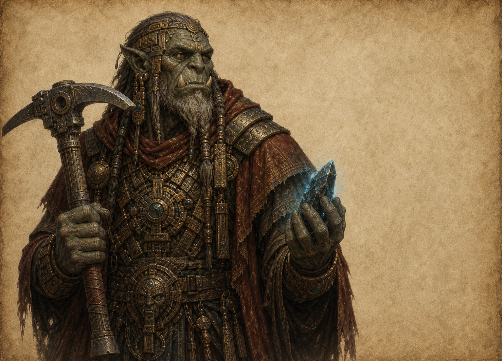

Расы / Исчезнувший народ
Орки
Исчезнувшая цивилизация, от которой остались руины, руда и язык Кхарак.

История
Орки существовали в древности и первыми открыли системную работу с рудой. Их исчезновение остается одной из главных загадок мира.
Биология
Надежных описаний биологии почти нет. Поздние изображения противоречат друг другу, а останки часто повреждены магическим фоном.
Культура
Об их культуре судят по каменным комплексам, символам Кхарака и следам ритуальных инженерных практик.
Архитектура
Орочья архитектура монументальна: массивные залы, шахтные соборы, рудные каналы и сооружения, которые выглядят как машины и храмы одновременно.
Военное дело
Следы укреплений показывают, что орки понимали оборону, осаду и управление большими рабочими массами.
Отношение к магии
Для орков магия, руда и технология, вероятно, не были отдельными дисциплинами. Они видели в них одну систему.
Отношение к другим расам
Современные расы относятся к оркам как к исчезнувшему предку опасного знания: уважение смешано со страхом.
Известные личности
Имена почти не сохранились. Чаще упоминаются не личности, а титулы, выбитые на руинах.
Интересные факты
Каждый новый перевод Кхарака может изменить политический спор, потому что древнее слово иногда оказывается правом на землю или рудник.